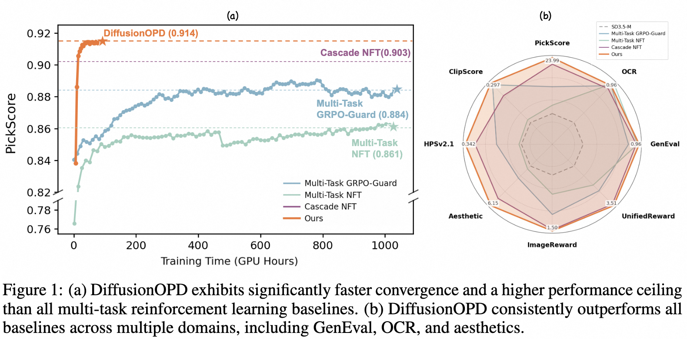
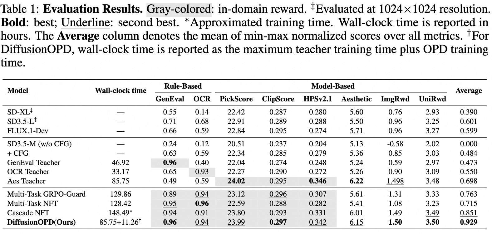
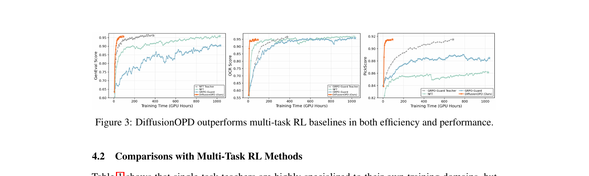
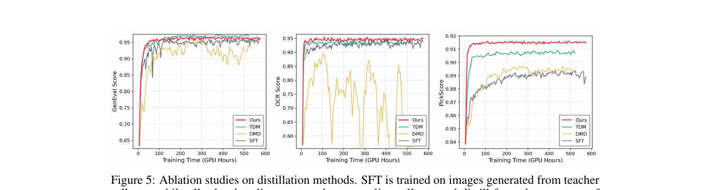
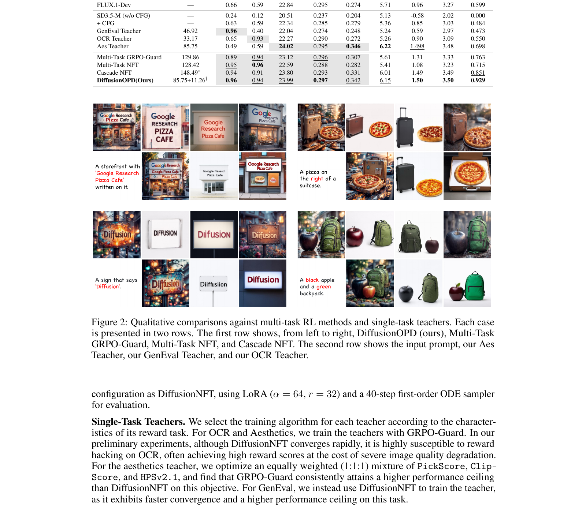

DiffusionOPD: 把 LLM 的 On-Policy Distillation 抬到 diffusion 上, 一个 closed-form 反向 KL 干掉 multi-task RL 的 PPO 噪声

1. 出发点 (Motivation)
文生图模型做完预训练之后, 标准的"对齐"路线是 RL — 用一个 reward model 把模型 push 到你想要的方向: 美学、文本一致、OCR、组合泛化。这条路单任务上 (e.g. flow-opd-2026 美学, awm-2025 数学/构图) 是成熟的。
问题是用户想要的是多任务都好: 一张图既要美又要 OCR 对、还要 prompt faithful。多任务 RL 有两条传统路线, 都不好走:
- Joint 优化 (multi-task GRPO / NFT): 把多个 reward 同时塞进训练循环, 不同任务交替 batch。问题是 (a) reward 之间梯度方向冲突, (b) 简单任务 (OCR) 收敛快、压制困难任务 (Aesthetic) 的信号。
- Cascade RL: 一个任务一阶段地训, 训完 OCR 再训美学。问题是 (a) 多阶段繁琐, (b) 灾难遗忘 — 第二阶段把第一阶段学的能力擦掉一部分。
Paper 的主张: 把"单任务探索" (RL on single reward) 和 "多任务整合" (combine M policies into 1) 解耦。具体做法是抄 LLM 的成熟思路 — On-Policy Distillation (OPD) [Agarwal 2024]:
- Stage 1: 每个任务独立训一个 teacher (随便用什么 RL 算法都行)
- Stage 2: 让一个unified student 自己 rollout 轨迹, 在每条轨迹上由对应 task 的 teacher 提供 dense supervision
LLM 上 OPD 的关键技术是反向 KL 在离散 token 分布上有 closed form (vocabulary 上的求和), 所以可以直接 backprop, 不用 REINFORCE。要把它搬到 diffusion 上, 论文要解决一个根问题: diffusion 的每一步是连续状态空间 Gaussian transition, KL 怎么算? 答案就是 §3.2 的核心推导。
2. 方法 (Method)
2.1 LLM 上的 OPD 长什么样 (Preliminary)
LLM 是自回归 token 序列 \(x = (x_1, \dots, x_T)\), 学生 \(\pi_\theta\) 和 teacher \(\pi^\star\) 都按 chain rule 分解:
—— 翻译: 整个序列的概率 = 每一步在给定前缀下的条件概率之积。
OPD 目标是 学生自己 rollout 后, 在它走过的前缀上, 让每一步条件分布去匹配 teacher:
—— 翻译: 期望(在学生采样的轨迹上)的每一步条件 KL 之和。它跟 sequence-level 反向 KL 是数学上等价的 — 链式法则一摊就出来。
对 LLM, 每个 step 的 KL 是离散词表 \(\mathcal{V}\) 上的求和, 显式 closed form:
这就是为什么 LLM 上 OPD 这么便宜 — 没有 high-variance policy gradient, 直接 backprop。
2.2 把 OPD 抬到 diffusion: 离散时间 Markov chain 视角
把 (3) 抽象一层: 它根本不依赖 token 性质, 只需要 (i) 同样的状态空间和 transition kernel 结构, (ii) per-step KL 是 closed-form。所以 paper 把"前缀"换成"denoising 状态", 把"\(\pi(\cdot \mid x_{\lt t})\)"换成"\(p(\cdot \mid x_{t_j})\)":
—— 翻译: 在学生 rollout 的 N 步去噪轨迹上, 每一步学生 transition kernel $p_S$ 和 teacher transition kernel $p_T$ 的 KL 求和。其中 $t_0 > t_1 > \dots > t_N = 0$ 是逆向时间。
2.3 关键洞察: SDE 离散化让 \(p_S, p_T\) 是同协方差 Gaussian
跟 flow-opd-2026 / awm-2025 一样, paper 沿用 Flow-GRPO 的 Euler-Maruyama 反向 SDE 离散化。给定 noise schedule \(\sigma_t = a \sqrt{t/(1-t)}\) (其中 \(a\) 是全局噪声水平), 学生 velocity \(v_j^S := v_\theta(x_{t_j}, t_j)\), 学生这一步 SDE update 是:
—— 翻译: 当前噪声态 $x_{t_j}$ 加上一个由 velocity + drift correction 决定的确定性位移, 再叠一个 $\mathcal{N}(0, I)$ 的随机扰动。$\Delta t_j < 0$ 因为时间是反向走。
把式中确定性部分聚合, 抽象成 transition kernel:
—— 翻译: 学生这一步的 transition mean $\mu^S$ 是 $x_{t_j}$ 和学生 velocity $v_j^S$ 的线性组合; 协方差 $\bar\sigma_j^2$ 只跟 schedule + 全局噪声水平 $a$ 有关, 跟模型参数 $\theta$ 完全无关。
Teacher 用完全一样的公式, velocity 换成 frozen teacher \(v_j^T := v_\phi(x_{t_j}, t_j)\), 得到 \(p_T = \mathcal{N}(\mu^T(x_{t_j}), \bar\sigma_j^2 I_d)\)。关键: 学生和老师协方差一致 (都依赖同一个 schedule), 而且都在学生 rollout 的同一个 \(x_{t_j}\) 上 evaluate。
repo/flow_grpo/diffusers_patch/sd3_sde_with_logprob.py:L48-L58 — 反向 SDE 的 prev_sample_mean 实现 (Eq. 7)
sigma = self.sigmas[step_index].view(-1, *([1] * (len(sample.shape) - 1)))
sigma_prev = self.sigmas[prev_step_index].view(-1, *([1] * (len(sample.shape) - 1)))
sigma_max = self.sigmas[1].item()
dt = sigma_prev - sigma
if sde_type == 'sde':
std_dev_t = torch.sqrt(sigma / (1 - torch.where(sigma == 1, sigma_max, sigma)))*noise_level
# our sde
prev_sample_mean = sample*(1+std_dev_t**2/(2*sigma)*dt)+model_output*(1+std_dev_t**2*(1-sigma)/(2*sigma))*dt
对应 paper Eq. (7): sigma ↔ \(t_j\) (SD3 scheduler 用 sigma 作时间), std_dev_t ↔ \(\sigma_{t_j}\), model_output ↔ \(v_j^S\) (或 \(v_j^T\) — 同函数复用), dt ↔ \(\Delta t_j < 0\)。noise_level 就是 paper 的 \(a\)。
2.4 同协方差 Gaussian 的 KL 有 closed form
两个 \(d\) 维同协方差高斯之间的 KL:
代 \(\Sigma = \bar\sigma_j^2 I_d\), 得:
—— 翻译 (核心): 学生和老师在同一个 noise 态上的 transition KL = "transition mean 的平方差" 除以 "transition 方差的 2 倍"。这是纯 deterministic 表达式 — 采样噪声 $\varepsilon_j$ 在解析过程中完全消掉了。
整体 DiffusionOPD 目标 (Eq. 11):
ODE 极限: 当 \(a \to 0\) (noise level → 0), \(\bar\sigma_j \to 0\), KL 形式 (除以 \(2\bar\sigma_j^2\)) 会爆。Paper 直接论证: 在确定性 ODE Euler update 下, \(p_S, p_T\) 不再是 stochastic kernel 而是 pointwise 映射, 所以"分布匹配"退化成"transition mean 匹配", 损失就是 (Eq. 12):
—— 翻译: ODE 极限下损失就是纯 L2 transition matching, 没有 $\bar\sigma_j^2$ 的归一化。SDE / ODE 在 DiffusionOPD 框架下用同一套代码实现, 只看 $a$ 的取值。
repo/scripts/train_sd3_opd.py:L1167-L1191 — DiffusionOPD loss 实现 (Eq. 11/12 一体化分支)
teacher_prev_mean = sample["teacher_prev_sample_means"][:, j].detach()
delta = (
prev_sample_mean.float().unsqueeze(1)
- teacher_prev_mean.float()
)
if float(config.sample.noise_level) <= 0.0:
per_step_kl = 0.5 * (delta ** 2) # Eq. (12): ODE / L2
else:
sigma_sq = (
std_dev_t.float() ** 2
).clamp(min=1e-8).unsqueeze(1)
per_step_kl = (delta ** 2) / (2.0 * sigma_sq) # Eq. (11): SDE / closed-form KL
per_step_kl_per_teacher_scalar = per_step_kl.mean(
dim=tuple(range(2, per_step_kl.ndim))
)
per_step_kl_scalar = per_step_kl_per_teacher_scalar.sum(dim=1)
distill_loss = per_step_kl_scalar.mean()
loss = distill_loss
10 行就是 Eq. 11/12 的完整实现。delta 是 transition mean 之差; noise_level=0 触发 ODE 分支 (Eq. 12), 否则用 σ² 归一化 (Eq. 11)。注意 .detach() — teacher mean 不参与梯度。默认 config 用 noise_level=0.0 (即 ODE 分支), 配 §4.3 ablation 的结论 (ODE 比 SDE 快最多 5x)。
2.5 §3.3 关键论证: PPO-style 和 closed-form KL 期望梯度相同, 但 PPO 多一项纯噪声
这一节是 paper 最有教育意义的部分。换种角度想 OPD: 把 teacher 视为 process reward model, 每一步的 negative KL 当作 advantage \(A_j\), 用 PPO surrogate 优化:
忽略 clipping, gradient accumulation 期间 \(\pi_{\theta_{\text{old}}} = \pi_\theta\) 所以 \(\rho_j = 1\), 梯度展开:
—— 翻译: PPO 梯度 = 解析的 pathwise term + 一个跟 sampled action $a_j$ 相关的 score-function term。
由于 \(\Delta_j\) 不依赖采样动作 \(a_j\) (它只是 closed-form KL), 而 \(\mathbb{E}_{a_j}[\nabla \log \pi_\theta] = 0\), 所以 score-function term 的期望为 0:
两个 estimator 期望相同。但 PPO 多出来的这一项是纯方差。具体: 对 Gaussian transition \(a_j = \mu^S(x_{t_j}; \theta) + \bar\sigma_j \varepsilon_j\), \(\nabla_\theta \log \pi_\theta(a_j \mid x_{t_j}) = (\varepsilon_j / \bar\sigma_j) \cdot \nabla_\theta \mu^S\) — 这一项跟采样噪声 \(\varepsilon_j\) 直接耦合, 每次 mini-batch 都注入新方差。
Paper 还指出 PPO 形式的第二个缺陷: 它依赖 stochastic policy density 和 \(\rho_j\), 在 ODE (确定性) 极限下根本写不出来。Closed-form KL 反而能从 SDE 平滑过渡到 ODE — 这就是 paper 标题的"unified perspective"。
2.6 Two-stage 训练 recipe

代码里 round-robin 是 i % M, teacher 通过 LoRA adapter 切换 (没有多份模型权重, 只是 swap LoRA):
repo/scripts/train_sd3_opd.py:L875-L881 — round-robin teacher 选择 + 对应数据集采样
teacher_idx = i % len(teachers)
slot_adapters = slot_adapter_names[teacher_idx]
slot_guidance_scales = slot_adapter_guidance_scales[teacher_idx]
train_samplers[teacher_idx].set_epoch(
epoch * config.sample.num_batches_per_epoch + i
)
prompts, prompt_metadata = next(train_iters[teacher_idx])
学生用 default LoRA adapter 自采轨迹, 然后对每个 task 的 teacher LoRA adapter 切过去算 \(\mu^T\):
repo/scripts/train_sd3_opd.py:L936-L965 — 切到 teacher LoRA 算 transition mean
for k_idx, adapter_name in enumerate(slot_adapters):
unwrap_model(transformer, accelerator).set_adapter(adapter_name)
with contextlib.nullcontext():
teacher_gs = slot_guidance_scales[k_idx]
teacher_prev_sample_mean_list = []
for j in range(config.sample.num_steps):
teacher_prev_mean_j = compute_teacher_step_mean(
transformer=transformer,
pipeline=pipeline,
latents_at_j=latents[:, j],
next_latent_at_j=latents[:, j + 1],
timestep_at_j=timesteps[:, j],
cond_embeds=prompt_embeds,
cond_pooled=pooled_prompt_embeds,
neg_embeds=sample_neg_prompt_embeds_b,
neg_pooled=sample_neg_pooled_prompt_embeds_b,
guidance_scale=teacher_gs,
noise_level=config.sample.noise_level,
solver=sample_solver,
deterministic=sample_deterministic,
)
Gradient accumulation factor \(G = M\) — 即一个 round-robin cycle (覆盖所有 \(M\) 个 task) 才做一次 backward + optimizer step。Config 里:
repo/config/opd.py:L40-L55 — gradient_accumulation_steps 跟 round-robin cycle 对齐
config.sample.train_batch_size = 3
config.sample.num_image_per_prompt = 1
config.sample.num_batches_per_epoch = 3 # 3 teachers (pickscore / ocr / geneval)
assert config.sample.num_batches_per_epoch % 3 == 0, (
"Please set config.sample.num_batches_per_epoch to a multiple of "
"len(config.train.teachers) (=3 here)."
)
config.train.batch_size = config.sample.train_batch_size
config.train.gradient_accumulation_steps = config.sample.num_batches_per_epoch
config.train.num_inner_epochs = 1
config.train.timestep_fraction = 0.99
每个 round 一次更新 — 减少 task 偏差 (没有任何一个 task 单独主导一次 step)。
3. 结论 (Key findings)
3.1 多任务主结果 (Table 1)

数字层面最值得圈点的几个点:
- 几乎匹配每一个 single-task teacher 的天花板 — 这是 OPD 框架的核心承诺: 学生不需要重新探索, 只需要在 teacher 已经会走的轨迹上学每一步映射。
- OCR 上 0.94 反超 OCR Teacher 0.93 — 教育上很反直觉但合理: 多 teacher 在 round-robin 中互相 regularize, student 比单一 teacher 更稳。
- Wall-clock 85.75 + 11.26 GPU h ≈ 97 GPU h (即 max single-teacher 训练时间 + 11.26h 的 distillation), 比 cascade NFT 的 148.49 h 少 35%。如果 teachers 可以并行训 (paper 实验里它们是), 实际真实时间更短。
- DiffusionOPD 跟 GRPO-Guard Teacher (PickScore 0.91, Aes 6.22) 在 PickScore 上没完全追平 (23.99 vs 24.02) — 美学这种主观 reward 上仍有微小 gap。
3.2 训练效率 (Fig 3)

3.3 vs 其他 distillation 方法 (Fig 4-5)

值得注意的是 SFT (黄色) 在 OCR 和 PickScore 上反而下降 — paper 没明说, 但很可能是 teacher 自生成图的分布偏窄, student 学完后泛化变差 (典型的 self-distillation 退化路径)。这是 DiffusionOPD 用 "on-policy student rollout + teacher supervises on those states" 比 SFT 优越的硬证据。
3.4 §3.3 实证: PPO-style vs closed-form KL (Fig 6)

3.5 定性对比

4. 实现细节 (Implementation Notes)
代码细节, 论文不一定明说但读代码能挖到的:
-
代码 fork 自 DiffusionNFT (NVlabs), 而 DiffusionNFT 又是 fork 自 Flow-GRPO (flow-opd-2026 也是同源)。所以包名仍叫
flow_grpo, 但训练入口是scripts/train_sd3_opd.py(1221 行)。读源码时,flow_grpo.diffusers_patch.sd3_sde_with_logprob.sde_step_with_logprob是 SDE step 的 ground truth, 同一个函数被学生和老师复用 — 区别只是noise_pred传哪边的 model output 进去。 -
默认 noise_level = 0 (
config/opd.py:L60)。这意味着论文的默认配置实际上是 Eq. 12 (ODE/L2 transition matching) 不是 Eq. 11 (SDE/reverse KL)。Eq. 11 在 ablation 里测过 (Fig 6 红/橙/蓝线), 但生产配置选了 ODE — Fig 6 显示 ODE 收敛快 5x。这点 paper 主文没强调清楚。 -
Sample steps = 10 推理 / Eval = 40 步 (
config/opd.py:L40-L42)。训练时只跑 10 步采样 (省时间), 评测时 40 步 ODE (跟 DiffusionNFT setup 对齐)。这是 paper-vs-code 一致, 不是 gap。 -
3 个 teacher LoRA adapter (
config/opd.py:L72-L94): pickscore (Aes) + ocr + geneval。每个 teacher 的 guidance scale 不一样: pickscore=4.5, ocr=4.5, geneval=1.0 (这点 paper 没解释; 推测是 GenEval teacher 用 DiffusionNFT 训的, 它本身不依赖 CFG)。 -
config.train.beta = 0.0— 没有 KL 到 base model 的正则项。OPD 的所有"约束力"全靠 teacher 提供, 不像 DDPO/PPO 那样需要 anchor 到 reference model。这是 OPD 架构的一个隐性优势 — 但也意味着如果 teacher 自身 reward-hacked, student 一定会复现 (no safety net)。 -
EMA 默认开 (
config.train.ema = True): student 参数维护一个 exponential moving average 用来评测。 awm-2025 也有这设计, 但那篇被 reviewer 指出过 paper-vs-code mismatch。 -
gradient_accumulation_steps跟num_batches_per_epoch锁死成同一值 — 这意味着每个 epoch (round-robin 循环 M 个 task 一次) 只做 1 次 optimizer step。如果你改了 batch size 而不调 grad_accum, 训练完全跑不通 (assert 会先 crash)。 -
没有显式的 distill_loss 平衡 — 多任务 loss 直接
.sum()加起来 (train_sd3_opd.py:L1188)。Paper 没讨论, 但因为同一架构、同一 schedule, 三个 task 的 \(\|\mu^S - \mu^T\|^2\) 尺度其实接近, 不像异质 reward 需要权重调。 -
首版代码 release 里
lora_path全是占位符"YOUR_AES_TEACHER_PATH", 真要复现得自己先训 3 个 teacher (或下载 Hugging Face 上quanhaol/Aes-Teacher,OCR-Teacher,GenEval-Teacher)。 -
没有 SDE log prob 用于 PPO baseline —
sde_step_with_logprob返回 log_prob, 但train_sd3_opd.py不调用这个值; 它只用prev_sample_mean。Fig 6 紫线 (Policy Gradient) 的代码路径没在 release 里。要复现 §3.3 的 ablation 比较, 得自己加 PPO loss 分支。
5. 批判性总结 (Critical assessment)
5.1 优点
- §3.3 那段方差分析是真好 — 把 closed-form KL 和 PPO 的关系讲清楚了, 而且 Fig 6 紫 vs 红线给了实证。这是这篇 paper 在 flow-opd-2026 / d-opsd-2026 / awm-2025 这一波 "把 RL 拽回 supervised target" 浪潮里最独到的 contribution: 不是说 PPO 错, 而是说 PPO 在 closed-form 可得的场合是"自找麻烦"。
- ODE / SDE 统一: Eq. 11/12 在代码里就是一个
if noise_level <= 0的分支, 框架性强。同一套训练代码可以平滑切换 sampler 类型, 这跟 flow-opd-2026 的 hybrid SDE-ODE 思路异曲同工。 - Round-robin + LoRA adapter 切换 — 工程上很优雅: 3 个 teacher 不占 3 份显存, 共享 transformer backbone, 只 swap LoRA。这让"多 teacher 蒸馏"成本接近"单 teacher 蒸馏"。
- 结果数字硬: average 0.929 vs cascade 0.851, 在 8 个 metric 上几乎全胜, 而且 wall-clock 更少。reward hacking 风险也比 cascade 低 (因为 student 看到的是 teacher transition mean, 不是 reward 直接信号 — teacher 的 reward hack 行为不会被放大)。
5.2 不足 / 疑点
- 理论上的"unified"略显勉强: Eq. 12 (ODE 极限) 是用"分布退化成 pointwise 映射, 所以 KL 写不出来, 退化成 L2"这种文字论证, 没给严格的 \(a \to 0\) 极限推导。读者得自己确信"\(\bar\sigma_j^2 \to 0\) 时, KL 这个量本身爆掉但梯度方向收敛到 L2 的方向"。一个数学严谨的版本应该取 \(\bar\sigma_j^2\) 的极限然后用 \(\Gamma\)-convergence 或类似工具证明。
- PPO-style baseline 的代码没 release (§4 提到), 想精确复现 Fig 6 紫色曲线得自己写。这是个透明性问题。
- 配置假设 3 teacher: assert
num_batches_per_epoch % 3 == 0是 hard-coded 数。如果要扩展到 5 个 reward, 改 batch 数 + assert 就行, 但 paper 没在更多 reward 数量上跑 — 是否 round-robin 还稳, 是开放问题。 - Teacher 的 reward hack 会被 student 完整复现: §3.3 的论证只关心"对 teacher 的匹配方差"; 它不关心"teacher 是不是个好东西"。如果 OCR teacher 本身在某些 prompt 上崩溃了 (paper 提过 DiffusionNFT 在 OCR 上易 reward hack — 所以才换 GRPO-Guard), student 也会忠实学过来。OPD 的上限就是 teacher 集合的上限的某种凸组合, 不会超过去。
- 没跟 d-opsd-2026 / flow-opd-2026 对比: 这三篇都是 2026/05 的同期工作, 名字都叫 *OPD, 但侧重不同 (D-OPSD 是 self-distillation 持续更新 step-distilled 模型; Flow-OPD 是 on-policy distillation for flow matching 美学单任务; DiffusionOPD 是多任务). 不同 niche, 但读者会困惑这些 OPD 的关系。Paper 没在 related work 把这条线串清楚 (可能因为同期发布, 来不及引用)。
- Aes teacher 训练时间 85.75 GPU h 是 DiffusionOPD 总开销的主导项。如果某个 reward 训练 teacher 本身比 cascade 还慢, 那 OPD 的速度优势会蒸发。Paper 没在不同 reward 难度组合下做 sensitivity analysis。
weights_url给了 HF, 但论文核心实验在 SD3.5-M 上, 没在 FLUX 或 SD3.5-Large 验证 generalization。 multi-task RL 在更大模型上是否仍是 joint 优化失败 + DiffusionOPD 大幅胜出, 不知道。
5.3 适用 vs 不适用
- ✅ 适用: 你有 1-N 个已经训好的 single-task teacher (或愿意训), 想把它们整合成一个 unified policy; reward 之间存在冲突 (joint RL 不收敛); 模型是 flow-matching 架构 (SD3 / FLUX)。整个 OPD 框架对 score-based diffusion 同样适用, 只是 transition kernel 推导要重做。
- ✅ 适用: 想理解"为什么 closed-form supervision 比 stochastic policy gradient 优"。这篇 paper 的 §3.3 适合做 reading group case。
- ❌ 不适用: 你只有一个 reward — DiffusionOPD 没有任何收益, 直接用 GRPO-Guard / DiffusionNFT 训单 task。
- ❌ 不适用: 你没有 teacher 也不想训 — OPD 本质是知识转移, 没有 teacher 就退化成普通 RL。
- ❌ 不适用: 你的 reward 是外部 API / 人工评估 (不能 backprop) — OPD 要求 teacher 是可调用的模型; 如果 reward 只能给 scalar, 只能走 RL 路线。
5.4 进一步阅读
- *同期 OPD 三兄弟: flow-opd-2026 (单任务 flow-matching 美学), d-opsd-2026 (step-distilled 模型上的 continuous self-distillation), DiffusionOPD (本篇, 多任务整合) — 三者都基于"on-policy + teacher transition supervision"思路, niche 不同。
- OPD 原版 (LLM 上): Agarwal et al. 2024 "On-Policy Distillation of Language Models", paper 直接抬这套到 diffusion。
- DiffusionNFT (NVlabs, 2026): 本 paper 的 codebase 来源, 也是它 multi-task baseline 之一 (Cascade NFT)。
- Flow-GRPO (Liu et al. 2025): SDE 离散化和反向 sampling 的来源, 本 paper 的 Eq. 5-7 直接借用。
- DMD / TDM: Fig 5 里的 baseline, 都是 step distillation 方向, 跟本 paper 的 "knowledge integration distillation" niche 不同, 但 distillation objective 设计上有借鉴价值。
- GRPO-Guard / DiffusionNFT 作为 teacher 训练算法: 本 paper 在不同 reward 上挑了不同 RL 算法做 teacher — 这本身就是个有用的 "什么 reward 该用什么 RL" 经验法则。
讨论 / Comments
评论托管在本仓库的 GitHub Discussions, 需 GitHub 账号。